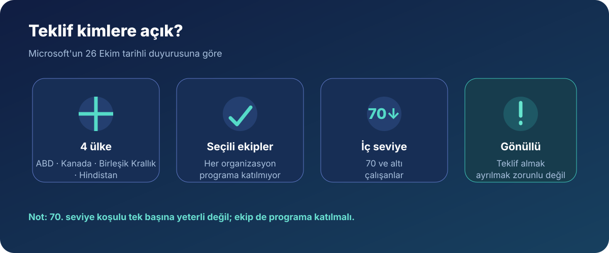
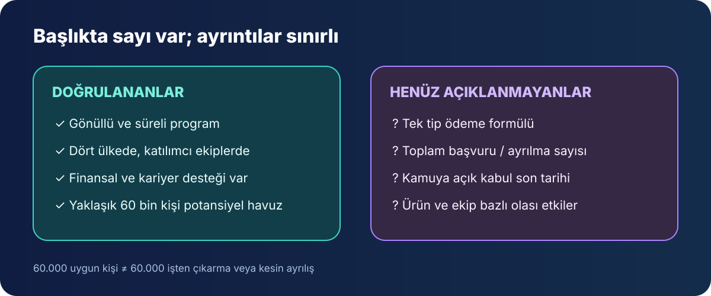

Microsoft, belirli ekiplerdeki uygun çalışanlara gönüllü ayrılma teklifi sunduğunu 26 Ekim'de duyurdu. Şirketin insan kaynaklarından sorumlu yöneticisi Amy Coleman'ın açıklamasına göre program ABD, Kanada, Birleşik Krallık ve Hindistan'da, katılımcı ekiplerdeki 70. seviye ve altındaki çalışanlara açık. Basına şirket tarafından doğrulanan yaklaşık 60 bin rakamı, teklifi alabilecek çalışanların büyüklüğünü anlatıyor; 60 bin kişinin işten çıkarıldığı veya ayrılacağı anlamına gelmiyor.
Bu ayrımı baştan yapmak önemli. Microsoft programı gönüllü ve süreli olarak tanımlıyor; uygun çalışanlara finansal destek ve kariyer planlama kaynakları sağlanacağını söylüyor. Ancak şirketin kamuya açık duyurusu, herkes için geçerli bir ödeme formülü, programın toplam maliyeti veya kaç kişinin kabul etmesinin beklendiği gibi ayrıntıları açıklamıyor.

Teklif kimleri kapsıyor?
Microsoft'a göre program dört ülkedeki katılımcı organizasyonlarda uygulanıyor. İç seviye 70 ve altında olmak tek başına yeterli değil: şirket özellikle bazı ekiplerin programa katıldığını, bazılarının ise katılmadığını belirtiyor. Ekip kararı; iş öncelikleri, müşteri taahhütleri ve iş gücü ihtiyacına göre değişiyor. Uygun çalışanlara teklif ayrıntılarının e-postayla iletilmesi planlanmış.
Bu nedenle sosyal medyada dolaşan “Microsoft'taki herkes başvurabilir” gibi yorumlar açıklamanın kapsamını olduğundan geniş gösteriyor. Duyuruya göre ülke ve seviye koşullarının yanı sıra çalışanın organizasyonunun programa dahil olması gerekiyor. Türkiye, Microsoft'un açıkladığı dört ülke arasında yer almıyor.
60 bin rakamı neyi ifade ediyor?
Associated Press'in 26 Ekim tarihli haberinde aktarılan yaklaşık 60 bin, program kapsamında teklif alabilecek çalışan sayısı olarak veriliyor. Microsoft'un haziran sonunda bildirdiği 223 bin tam zamanlı çalışanla karşılaştırıldığında bu, küresel kadronun kabaca yüzde 27'sine denk geliyor. Bu oran yalnızca potansiyel uygunluk havuzunu anlatıyor; fiili ayrılma oranını değil.
Başka bir deyişle haber, şirketin 60 bin kişiyi işten çıkardığını söylemiyor. Çalışanlar teklifi kabul etmek zorunda değil; kaç kişinin kabul edeceği kamuya açık değil. Microsoft'un açıklaması da zorunlu işten çıkarma hedefi veya beklenen katılım sayısı vermiyor.

Ödeme ve ayrılma takvimi açıklandı mı?
Microsoft'un kamuya açık blog yazısı finansal destek ve kariyer planlama kaynaklarından söz ediyor, fakat ayrıntılı ödeme hesabını yayımlamıyor. Bireysel şartların uygun çalışanlara gönderilecek teklif e-postasında bulunacağı belirtiliyor. Bu nedenle farklı ülkeler, görev seviyeleri veya hizmet süreleri için internette paylaşılan tek bir ödeme tutarını herkese uygulanacak kesin koşul gibi sunmak doğru olmaz.
Programın süreli olduğu açıklandı; fakat kamuya açık duyuruda başvuru için son tarih ve ayrılma günü belirtilmiyor. Bazı haberlerde aralık başı veya yıl sonu takvimi aktarılıyor. Microsoft'un resmi açıklaması bu tarihleri doğrulamadığı için bunları kesinleşmiş şirket şartları olarak değerlendirmiyoruz.
Bir çalışan teklifi değerlendirirken neye bakmalı?
Şirketin genel duyurusu, kişiye özel teklifin yerini tutmuyor. Uygun olduğunu düşünen bir çalışan için en güvenilir kaynak, Microsoft'un doğrudan ilettiği yazılı şartlar ve kendi ülkesindeki iş sözleşmesi. Ayrılma kararından önce en azından şu başlıklar netleştirilmeli:
- Ödeme hesabı: Tutarın hangi ücret ve hizmet süresi üzerinden belirlendiği, ödeme zamanı ve varsa koşulları.
- Yan haklar: Sağlık sigortası, hisse ödülleri, izin bakiyesi ve diğer hakların hangi tarihe kadar sürdüğü.
- Vergi ve yerel kurallar: Brüt teklifin ele geçecek net tutara etkisi ve ülkeye özgü iş hukuku koşulları.
- Takvim ve karar süresi: Teklifin kabul edilmesi halinde son çalışma günü, ödeme ve geçiş planının yazılı olarak teyidi.
Microsoft açıklaması bu ayrıntıları bütün çalışanlar için kamuya açık biçimde sıralamıyor; ülkeye, role ve kişisel sözleşmeye göre değişebilecek konuların teklifte kontrol edilmesi gerekiyor. Paylaşılan ekran görüntülerindeki kişisel veya şirket içi bilgileri yayımlamak yerine resmi iletişim kanallarını kullanmak da çalışan mahremiyeti açısından önemli.
Bu kararın teknoloji sektörü için anlamı
Gönüllü ayrılma programı, büyük teknoloji şirketlerinin ekip yapısını ve maliyetlerini yönetmek için kullandığı seçeneklerden biri. Microsoft'un kendi açıklaması bu adımı katılımcı organizasyonların değişen iş gücü ihtiyaçlarına uyum sağlamasının bir yolu olarak anlatıyor. Basında şirketin yapay zekâ altyapısına yaptığı yatırımlar da haberin bağlamında anılıyor; ancak Microsoft, bu programı yalnızca yapay zekâ harcamalarına bağlayan bir gerekçe açıklamadı.
Çalışanlar açısından teklifin anlamı kişisel koşullara bağlı: yazılı şartlar, gelir sürekliliği, sağlık kapsamı ve yeni iş bulma planı birlikte değerlendirilmeden karar vermek sağlıklı olmaz. Ürün kullanıcıları açısından ise şu an için açıklanmış bir Windows, Xbox veya Copilot hizmet kesintisi bulunmuyor. Bir ekip programa katılıyor diye ilgili ürünün kapanacağı sonucu çıkarılamaz.
Kısa cevaplar
- Microsoft 60 bin kişiyi işten mi çıkardı? Hayır. Yaklaşık 60 bin, gönüllü teklif için potansiyel uygun çalışan sayısıdır; gerçek ayrılma sayısı açıklanmadı.
- Teklif hangi ülkelerde? ABD, Kanada, Birleşik Krallık ve Hindistan'da katılımcı organizasyonlar.
- Her 70. seviye ve altındaki çalışan uygun mu? Hayır. Çalışanın ekibinin de programa dahil olması gerekiyor.
- Türkiye'deki çalışanlar kapsama dahil mi? Microsoft'un duyurusunda Türkiye listelenmiyor.
- Ödeme miktarı ve kesin son tarih belli mi? Kamuya açık Microsoft açıklamasında tek bir ödeme formülü veya son tarih yayımlanmadı.
Sonuç
Microsoft'un yeni Voluntary Exit Offer programı, seçili ekiplerdeki çalışanlara şirketten finansal destek ve kariyer planlama kaynaklarıyla ayrılma seçeneği sunuyor. En çok paylaşılan 60 bin sayısı işten çıkarılacak kişi sayısı değil; teklif alabilecek potansiyel çalışan havuzunun tahmini büyüklüğü. Kapsamın ekip bazında değişmesi, bireysel şartların e-postayla iletilmesi ve ayrıntılı ödeme ile takvimin kamuya açık olmaması haberin temel sınırları.
Kaynaklar
- Microsoft Blog: Introducing a Voluntary Exit Offer (26 Ekim 2026)
- Associated Press: Microsoft offers a quarter of its global workforce voluntary buyouts (26 Ekim 2026)
- Microsoft 2026 Annual Report: 30 Haziran itibarıyla çalışan sayısı
Son kontrol: 27 Ekim 2026. Program kapsamı ve koşullarına ilişkin resmi ifadeler Microsoft'un blog duyurusuna; yaklaşık 60 binlik ölçek ise Associated Press'in şirket teyidine dayanan haberine göredir. Ayrıntılı bireysel şartlar kamuya açık değildir.